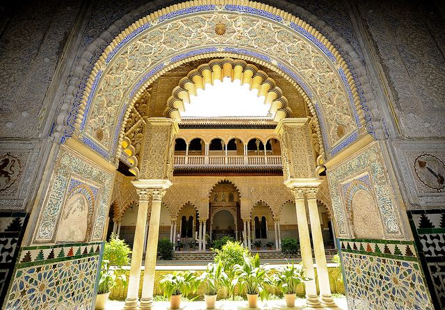

Mosque-Cathedral of Cordoba ☪
Mosque-Cathedral in Cordoba is one of Spain's architectural buildings with the most Islamic influence and historical significance. The Mosque-Cathedral was originally home to a Roman temple. After the invasion of Muslims in 711, the temple was divided in half and shared by Christians and Muslims. However, in 784 the building was destroyed and a mosque was constructed in its place. In 1236 Cordoba was reconquered by the Christians, and Christian aspects were added to the mosque, however the mosque was never demolished, subsequently resulting in the hybrid structure that remains: The Mosque-Cathedral of Cordoba. Many aspects of Islamic culture remain evident in the architectural style of the Mosque-Cathedral including the various striped, cusped arches and halls of numerous coloroful columns throughout the building. The Mosque of Cordoba is known for its ribbed, vaulted ceilings carved from stone that create honeycomb patterns. This design later influenced many of Spain's architecture and other Western religious architecture.
Alcazar of Seville 🌙
The Alcazar in Seville is another very significant structure in Spain with huge islamic influence. The Alcazar which was built in the 11th century, is the oldest Islamic palace in Spain. The islamic influence is most directly seen in the islamic patterns decorated throughout the building. Another aspect of Islamic culture featured in the Alcazar is the Patio del Yeso inside the Alcazar, which was created by Muslims in the 12th century. The Patio del Yeso features a courtyard with a pool reflecting the sky in the middle. Creating aquatic monuments was a common practice in Arabic arhcitecture. In Islam, water symbolizes life and purity, especially when it’s in the gardens. After Christian reconquisition of Spain, the Alcazar was occupied by various monarchs who modified the building to their tastes. However, the Alcazar remains a symbol of Islamic influence and significance in Spain.